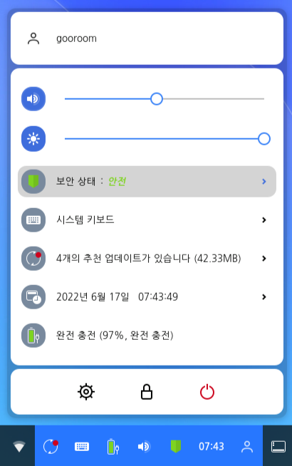

구름 관리 서버 (GPMS)의 정보를 나타냅니다. GPMS는 한컴구름 플랫폼의 중앙 집중적 보안관리 지원을 위한 보안 정책을 일괄 배포 및 원격 모니터링 기능을 지원합니다. 한컴구름 플랫폼을 이용하는 사용자 계정과 단말 통합 관리를 지원하며, 효율적인 관리를 위해 그룹별 정책 생성, 적용 관리합니다. 단말 등록/재등록 버튼을 통해 단말 등록기를 사용하실 수 있습니다.또는 오른쪽 하단의 통합 애플릿을 통해 실행할 수 있습니다.1.런처버튼을 선택한 다음 작업 표시줄의 검색 상자에 구름 보안상태 도구를 입력하고 결과 목록에서 매체제어 편집기를 선택합니다. 2.런처
아이콘을 선택합니다. 3. 사용자 암호를 입력하면 구름 보안상태 도구가 실행됩니다.

페이지 기능 설명
왼쪽 사이드바에서 페이지를 선택할 수 있습니다.
| 구름 관리 서버 | 구름 관리 서버 (GPMS)의 정보를 나타냅니다. |
| 정책 | 권한 정책 정보, 매체 제어 정책, 보안, 네트워크, 알림을 포함합니다. |
| 권한 정책 정보 | GPMS에서 설정한 브라우저 정책을 보여줍니다. |
| 매체 제어 정책 | 장치, 시스템과 네트워크 정책을 보여줍니다. |
| 보안 | 단말의 보안 상태와 보안기능 활성화 여부를 확인 할 수 있습니다. |
| 네트워크 | 네트워크와 방화벽 정책을 보여줍니다. |
| 알림 | 알림이 오는 조건을 확인할 수 있습니다. |
| 시스템정보 | 시스템 정보를 보여줍니다. |
| 로그정보 | 선택한 기간에 발생한 이벤트를 보여줍니다. |